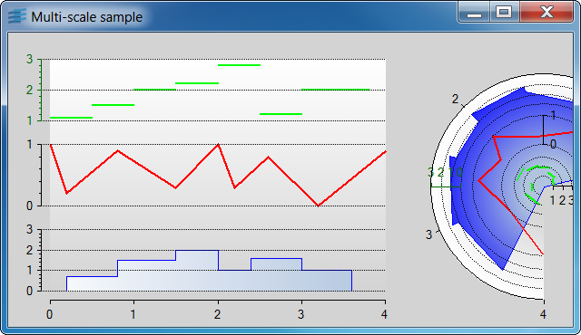

multiscaleCreation of a chart with several stacked scales for the ordinate.
This sample shows you how to define a chart with several stacked scales along the ordinate.
It creates a chart using a Cartesian projector and another one using a Polar projector. Both charts display three data sets. Each data set is displayed relatively to a different ordinate scale with a different displayer.
IlvChartGraphicIlvCartesianProjectorIlvPolarProjectorIlvChartCoordinateInfoIlvRectangularScaleDisplayerIlvCircularScaleDisplayerIlvRectangularGridDisplayerIlvCircularGridDisplayerIlvStairChartDisplayerIlvPolylineChartDisplayerIlvStepChartDisplayer